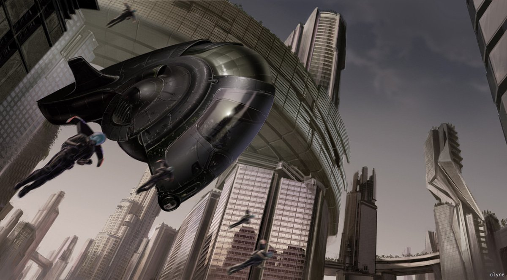

The nautilus has been great inspiration in science fictions and movies. The transportation vehicles in Minority Report simulate the appearance of the nautilus. There is also the Nautilus Submarine in French novelist Jules Verne's two novels, Twenty Thousand Leagues Under the Sea and The Mysterious Island.
- 